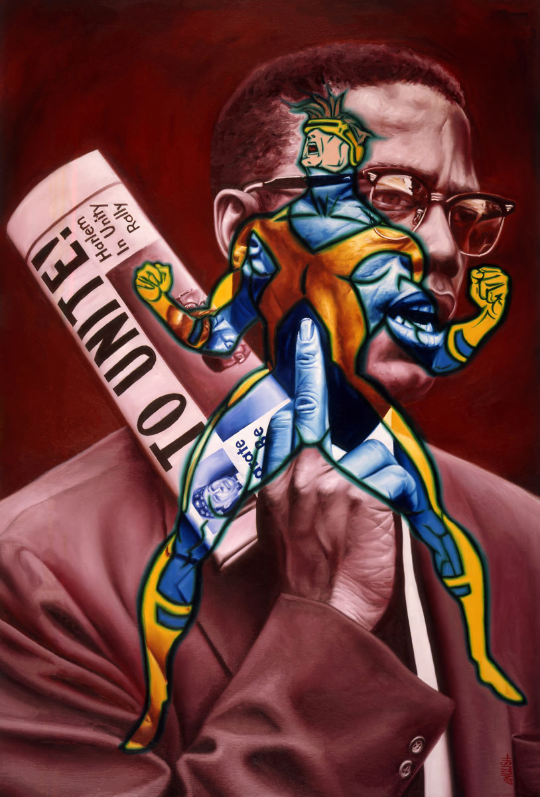
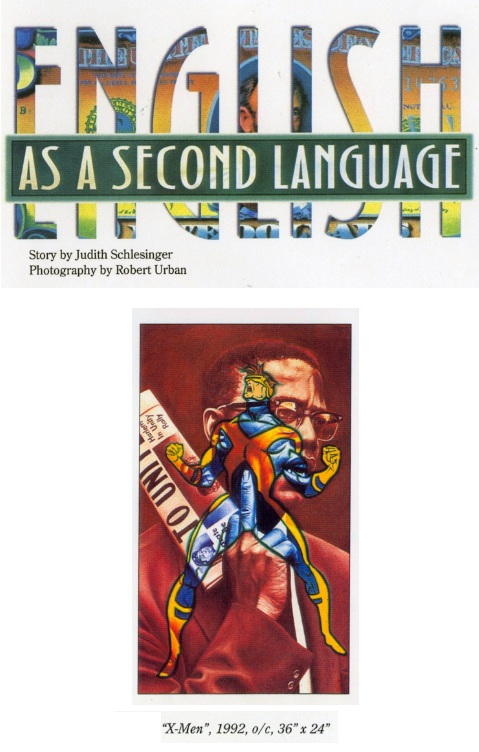

Exhibitions
Summer Group Show, Frank Bustamante Gallery, August 3–21, 1993.

Literature
Judith Schlesinger, “English as a Second Language,” Topia, Spring 1997, p. 10.
Ron English, Popaganda: The Art & Subversion of Ron English (San Francisco: Last Gasp, 2001), p. 75. ISBN 1-887128-60-3.

Ron English & Morgan Spurlock, Abject Expressionism: The Art of Ron English (San Francisco: Last Gasp, 2007), p. 162. ISBN 978-0867196894.

Ron English, Fauxlosophy: The Art of Ron English (San Francisco: Last Gasp, 2016), p. 188. ISBN 978-0867196566.
Ron English, Original Grin: The Art of Ron English (Paris: Cernunnos, 2019), p. 135. ISBN 978-2374950938.

“Ron English’s ‘Agit-Pop,’” POP ART, November 30, 2008. Online.

Ancillary Documentation





Additional Online Circulation
This work appears in Ron English’s Agit Pop archive page on Graffiti.org, available here.
This work also appears as an image in Ron English’s archive on Graffiti.org, available here.